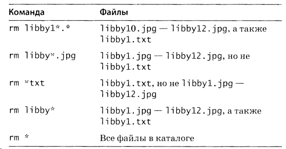
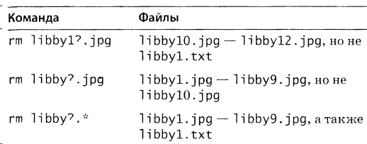
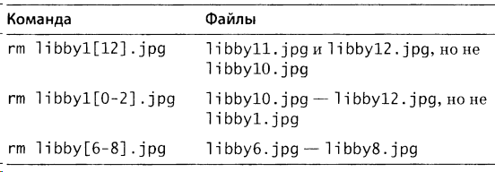
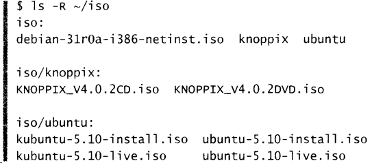
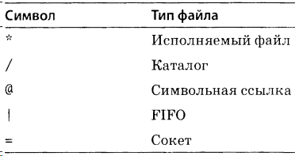
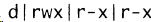
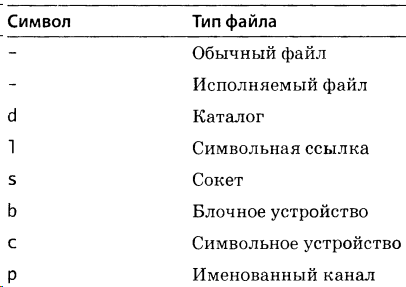

Именование файлов и каталогов.
Недопустимые или нежелательные символы:
/ Нельзя использовать ни при каких обстоятельствах
\ Должен быть предварен таким же символом. Применять не рекомендуется
- Нельзя использовать в начале имени файла или каталоrа
[] Каждый из этих символов должен быть предварен обратной косой чертой. Применять не рекомендуется.
{} Каждый из этих символов должен быть предварен обратной косой чертой. Применять не рекомендуется
* Должен бытъ предварен обратной косой чертой. Применять не рекомендуется
? Должен быть предварен обратной косой чертой. Применять не рекомендуется
' Должен быть предварен обратной косой чертой. Применять не рекомендуется
" Должен быть предварен обратной косой чертой. Применять не рекомендуется
Групповые операции (*, ?, []).



ls
Вывод содержимого текущего каталога.
ls music или ls /home/user/music - вывод содержимого каталога.
~ - обращение к домашнему каталогу текущего пользователя.
ls ~/videos/*.mp4 - выведет все файлы с расширением mp4 в каталоге videos
ls - R - рекурсивный вывод.

ls -1 - вывод списком в одну колонку (--format=single-column).
ls -m - вывод через запятую (--format=commas).
ls -a - отображение скрытых файлов и каталогов (--all).
ls -F - вывод классифицированный (--classify). * говорит об исполняемом файле, а / (косая черта) - о каталоге.

ls -l - вывод в подробном формате:
-rw------- 1 root root 35218 Июл 28 2010 mbox
-rw-r--r-- 1 root root 107 Июл 22 2010 minicom.log
drwxr-xr-x 10 root root 4096 Янв 24 2012 nagios
Слева направо:
- спецификатор доступа и тип файла (первая d соответствует каталогу, - файлу);
- количество жестких ссылок для файла или количество содержимого для каталога;
- владелец файла;
- группа;
- размер;
- дата последней модификации (иногда в формате г.м.д., иногда м.д.г);
- имя файла/каталога.
Спецификатор доступа.

1-я группа. Обозначает тип файла:

2-я группа. Права владельца файла.
3-я группа. Права группы.
4-я группа. Права всех остальных пользвоателей.
Обозначения:
r - чтение разрешено;
w - запись разрешено;
x - выполнение разрешено.
Применительно к каталогам:
r - разрешено просматривать содержимое каталога;
w - разрешено включение новых файлов в каталог, переименование, удаление;
x - разрешено выполнять команды над файлами каталога или обращаться к подкаталогам.
ls -r - вывод в обратном порядке (--reverse)
ls -X - сортировка по суффиксам имен файлов (--sort=extension)
ls -t - сортировка по дате и времени (--sort=time)
ls -S - сортировка по размеру файлов (--sort=size)
ls -h - представление размеров в человекочитаемом формате kB, Mb, Gb и т.д. (--human-readable)